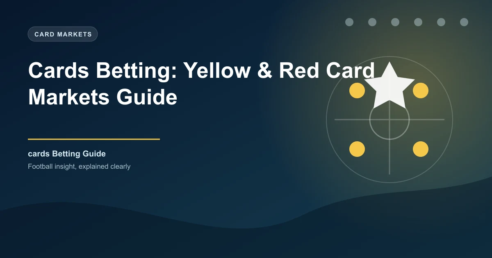

Cards Betting: Yellow & Red Card Markets Guide

Cards betting is one of the most sophisticated and potentially profitable niche markets in football. Unlike goal-based markets where bookmaker models are highly refined, card markets still contain significant inefficiencies that informed bettors can exploit. The key advantage with cards betting is that the fundamental drivers — referee tendencies, team disciplinary history, match context, and league culture — are all researchable and relatively stable over time.
This comprehensive guide covers everything you need to bet on cards effectively, from understanding booking points systems to building your own predictive model and navigating in-play card markets.
Understanding Card Betting Markets
Card betting has evolved significantly. The most common markets include:
Over/Under Total Cards
The standard market. Lines are typically set at 3.5, 4.5, or 5.5 total cards (yellow + red) for the match. Red cards count as one card but with additional booking points (see below). Available at Bet365, Betway, and most major bookmakers.
Booking Points (Pinnacle System)
This is the most sophisticated and widely used card market among professional bettors. The standard system assigns points as follows:
- Yellow card: 10 points
- Second yellow (red): 25 points (10 for the first yellow + 15 for the second)
- Straight red card: 25 points
Lines are typically set at 20–40 booking points (so 2–4 yellow cards or equivalent). Pinnacle originated this market and still offers the sharpest booking points lines with the lowest margins.
Team-Specific Cards
Bet on which team will receive more cards, or on a specific team's total card count. This market rewards deep knowledge of each team's disciplinary tendencies and the referee's carding patterns.
First Card Market
Bet on which team receives the first card of the match. The team with more aggressive pressing or defensive fouling tendencies (often the away side) is typically favoured but not always priced efficiently.
Player-Specific Cards
Individual player to receive a card. Certain players (defensive midfielders, aggressive full-backs) are card-prone. Check WhoScored or Transfermarkt for player disciplinary history.
Booking Points System Explained
The booking points system is critical to understand because many professional bettors use it as their primary card market. Here is how the points accumulate in practice:
| Scenario | Points | Example |
|---|---|---|
| One yellow card | 10 | Player receives a yellow for a tactical foul |
| Two yellows (same player) | 25 | 10 (first yellow) + 15 (second yellow/red) |
| Straight red card | 25 | Violent conduct or serious foul play |
| Two separate yellow cards | 20 | Two different players booked |
| Straight red + one yellow | 35 | 25 (red) + 10 (yellow) |
| Three yellows (no red) | 30 | Three separate players booked |
Bookmakers usually offer lines at 30.5, 40.5, or 50.5 booking points. A typical Premier League match averages 30–40 booking points.
Team Disciplinary Analysis
Not all teams accumulate cards equally. Disciplinary patterns are remarkably stable across seasons and correlate strongly with playing style.
| Team Style | Avg Cards/Game | Booking Points/Game | Example Teams |
|---|---|---|---|
| Aggressive pressers | 2.8–3.5 | 30–40 | Liverpool, Leeds, Atletico Madrid |
| Physical/defensive | 2.5–3.2 | 28–38 | Everton, Burnley, Getafe |
| Possession/technical | 1.5–2.2 | 18–28 | Man City, Barcelona, Arsenal |
| Counter-attacking | 2.0–2.8 | 22–32 | Leicester, Napoli, Dortmund |
Data from FBref and WhoScored. Track these averages for your target teams over the trailing 10–15 matches.
The Defensive Midfielder Trap
Target matches where a defensively aggressive team (e.g., Atletico Madrid) faces a technically gifted side that draws fouls (e.g., Barcelona). The defending team's midfielders accumulate cards through tactical fouls to stop counter-attacks. Backing over 4.5 cards or over 40 booking points in these matchups has historically been profitable. Check the specific defensive midfielder's yellow card accumulation on WhoScored before betting.
Referee Impact on Card Rates
Referee tendencies are arguably the most important factor in card betting. Referees have consistent, measurable patterns in how many cards they issue per match and what fouls they deem worthy of punishment.
Key referee statistics to track on Soccerway and Transfermarkt:
- Cards per match average — Some referees issue 2.5 cards/game; others issue 5+.
- Fouls per card ratio — How many fouls before a card is shown. Low ratio = card-happy referee.
- Home/away card bias — Some referees show significantly more cards to away teams.
- Derby match adjustment — Some referees let derbies flow; others clamp down early.
| Referee Type | Cards/Game Avg | Booking Points/Game | Example Referees |
|---|---|---|---|
| Strict (card-happy) | 4.5–5.5 | 45–60 | Michael Oliver, Cüneyt Çakir, Danny Makkelie |
| Moderate | 3.0–4.0 | 30–45 | Anthony Taylor, Daniele Orsato, Björn Kuipers |
| Lenient (let-it-play) | 2.0–3.0 | 20–30 | Paul Tierney, Slavko Vincic, Felix Zwayer |
Pro Tip: Referee Replacement
Always check the official referee assignment 24 hours before kick-off on Transfermarkt. If a strict referee is replaced by a lenient one (or vice versa), the card line may not adjust sufficiently, creating a value opportunity. Late referee changes create the biggest market inefficiencies.
League Differences in Card Rates
Card rates vary substantially by league due to playing style, refereeing culture, and league regulations.
| League | Avg Cards/Game | Avg Booking Points/Game | Notes |
|---|---|---|---|
| Premier League | 3.2–4.0 | 34–44 | High intensity, VAR reduces missed cards |
| La Liga | 4.0–5.0 | 42–55 | More tactical fouling, stricter refereeing |
| Serie A | 3.5–4.5 | 38–50 | Physical defending, tactical fouls, dramatic reactions |
| Bundesliga | 2.8–3.5 | 30–40 | Less tactical fouling, more open play, lenient refs |
| Ligue 1 | 3.5–4.5 | 38–50 | Physical, athletic but chaotic play |
| Championship | 3.5–4.5 | 38–50 | Physical, competitive, fewer technical players |
| NPFL (Nigeria) | 3.0–3.8 | 32–42 | Physical play but less consistent refereeing |
La Liga consistently has the highest card rates in Europe. Bundesliga has the lowest among the top five. Use OddsPortal to check line values across leagues.
Derby & High-Stakes Match Impact
Derby matches and high-stakes fixtures consistently produce more cards. The reasons are well documented:
- Higher emotional intensity — Players are more aggressive, less controlled
- More fouls — Derby matches average 25–35% more fouls than non-derby matches
- Referee caution — Referees are quicker to card early to establish control
- Historical rivalry — Some fixtures (El Clásico, North West Derby, Milan derby) consistently produce high card counts
Historical data from WhoScored shows that derby matches produce an average of 1.2–1.8 more cards than non-derby matches in the same league. If the line does not reflect this +1.5 card adjustment, the over is a strong play.
In-Play Cards Betting
Card betting comes alive in-play. The ability to assess the referee's tolerance, the match temperature, and the game state gives live bettors a significant informational advantage over bookmaker algorithms.
The First 15 Minutes
Watch for early cards. If a referee shows a yellow card within the first 15 minutes, the card count tends to rise for the rest of the match. A quick booking indicates the referee is setting a strict tone. If no card appears in the first 25 minutes, the under becomes more likely.
Game State Dynamics
Matches where one team leads by a narrow margin (1–0) tend to produce more cards in the second half as the losing team commits more fouls chasing the equaliser. If the score is level after 70 minutes, card counts typically accelerate as desperation sets in.
VAR and Red Cards
VAR has increased the likelihood of red cards in matches with contentious incidents. If a tackle receives a VAR review, the odds on a red card being shown collapse. Watch matches closely and use Smarkets for live red card trading during VAR checks.
Building a Cards Prediction Model
A structured card prediction model can be built using these inputs:
- Team disciplinary averages — Yellow cards and red cards per game (last 15 matches), home/away split
- Opponent fouls drawn — Some teams draw more fouls (technical dribblers like Vinicius Jr, Doku, Mbappé)
- Referee card rate — Multi-match average, ideally with a minimum 10-match sample
- Match importance factor — Derby = +1.5 cards, cup final = +0.5, relegation six-pointer = +1.0
- League baseline — Adjust projection to league average
Basic formula: ((Team A cards/game + Team B cards against/game + Team B cards/game + Team A cards against/game) / 2) × referee factor × match importance
Worked Example
Match: Atletico Madrid vs Real Madrid (La Liga)
Market: Over/Under 40.5 booking points
Team Data:
Atletico cards/game: 3.2 (avg 35 booking pts)
Real Madrid cards/game: 2.8 (avg 30 booking pts)
Atletico fouls conceded/game: 14.5
Real Madrid fouls conceded/game: 11.2
Referee: Cüneyt Çakir — 4.8 cards/game (strict)
Match context: Madrid derby — historically produces 4.5–5.5 cards
Projection: 5.0 cards × 11 pts average = ~50 booking points
Verdict: Over 40.5 booking points is strong value. Projection of ~50 points comfortably exceeds the line.
Common Card Betting Mistakes
Ignoring the referee: This is the single biggest mistake. A match with a strict referee can easily produce twice as many cards as one with a lenient referee, regardless of the teams involved.
Forgetting about red card escalation: A red card in the first half completely changes match dynamics. The team with 10 men commits more tactical fouls and often receives additional yellows. Red card matches produce 30–50% more total booking points.
Betting on individual player cards without research: A player's yellow card accumulation rate is surprisingly consistent. Check WhoScored for the last 20 matches before backing a player to be carded.
Assuming home/away card parity: Away teams consistently receive more cards than home teams across all top leagues. The home advantage effect on refereeing is real and measurable.
Card Betting FAQ
What is the best card market for beginners?
Over/Under total cards (3.5, 4.5, or 5.5) is the simplest entry point. Booking points are more nuanced but offer better value once you understand the system.
How do booking points work at different bookmakers?
Most bookmakers use the standard system (yellow = 10, second yellow = 25, straight red = 25). However, some use different values. Always check the specific bookmaker's rules on OddsPortal before betting.
Which league has the most yellow cards?
La Liga consistently has the highest yellow card rate among Europe's top five leagues, averaging 4.0–5.0 cards per match. Bundesliga has the lowest at 2.8–3.5.
Which referee gives the most yellow cards?
Referees vary significantly. Historically, Michael Oliver (Premier League), Cüneyt Çakir (UEFA), and Danny Makkelie (UEFA/Eredivisie) are among the strictest card-issuing officials.
Does VAR increase card counts?
Yes, VAR has increased card counts by approximately 5–10% across most leagues because it catches violent conduct and serious foul play that officials miss in real time.
Can I bet on cards in African leagues?
Some bookmakers offer card markets for CAF Champions League and select African leagues. Check 1xBet for the widest African league coverage.
What is the average booking points for a Premier League match?
Typically 34–44 booking points per match, which equates to roughly 3–4 yellow cards or equivalent.
Research Before You Bet
Use WinFulltime's match analysis alongside referee and disciplinary data from WhoScored and FBref for smarter card betting.
View Match Analysis →